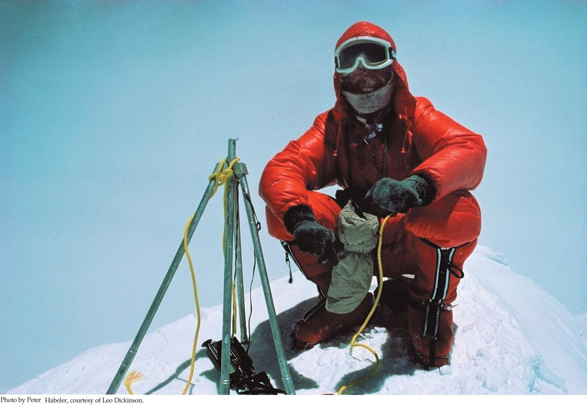

| 31 | Breathing |
|

Reinhold Messner on the summit of Mount Everest after ascending without supplemental oxygen.
|
Who knows when someone first tried to reach the top of Mount Everest? People have been living in the Himalayan highlands for 10,000–20,000 years, and it seems inevitable that some would have been intrepid explorers who climbed the mountains. We can be sure those prehistoric explorers had no tanks of compressed O2. Whatever they accomplished, they did while breathing the natural air.
In the modern era of mountaineering, E. F. Norton was one of the first to try to reach Everest’s summit while breathing natural air. In 1924 he reached 8,500 meters (28,000 feet)—just 300 meters (1,000 feet) from the top. Biologists at the time knew little about the challenges of extreme elevations. The overwhelming difficulty of climbing at 8,500 meters was a surprise. Norton tried to take charge of his situation by counting steps. Attempting to take 20 consecutive uphill steps, he never could and had to turn back.
When Reinhold Messner and Peter Habeler finally made the first recorded climb to the summit of Everest while breathing natural air in 1978, the extreme demands of the final 1,000 meters were well known. Messner is one of the most gifted mountaineers in history. By now he has climbed all 14 peaks in the world that are higher than 8,000 meters—all while breathing natural air. Yet he and Habeler required an entire hour to climb Everest’s final 100 meters.
The most fundamental problem at high elevations is that the atmospheric pressure is far lower than at sea level. Of the molecules in the air, 21 percent are O2 at all elevations. But because of the low pressure at high elevation, the air is dilute: the number of molecules per liter is reduced. An unusual aspect of this stress is that it is inescapable. People or other animals can escape the cold temperatures of high elevation by crawling into tents or burrows. The air they breathe, however, remains dilute everywhere. The breathing organs—the lungs—face an unavoidable challenge to take in enough O2 to meet the body’s needs. At the peak of Everest, the air has only a third as many molecules per unit of volume as at sea level.
The highest permanent human settlements are at 3,500–4,500 meters, where the air is about 60 percent as concentrated as at sea level. Prehistoric people established such settlements at three places on Earth: the Andes, the Tibetan plateau, and the Ethiopian highlands. Biologists have recently discovered that genetic adaptations to high elevation have started to evolve in these populations even though they have been living there for only a few hundred generations. Some species of birds and mammals, such as guanacos and vicuñas, are highly adapted because of their long evolutionary histories in the high mountains.
Why is climbing uphill at 1.7 meters per minute (100 meters/hour) the most intense work that is possible for a human near Everest’s summit?